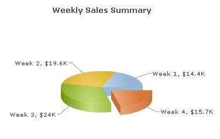

| Converting our previous chart into a Pie Chart |
|
In our previous example (Creating your first chart), we had created a 3D column chart to graphically represent the weekly sales for one month. Here, we will quickly convert this chart into a 3D Pie chart without changing the original data. Once completed, the chart will look like the image shown below. However, the actual chart supports animation and lots more interactivity (like slicing of pie when clicked, rotation of chart using mouse, tool-tips on labels, etc.) To change the chart type, all you have to do is to edit the previous code and change the name SWF file to Pie3D.swf. Let's see how the change is incorporated in the HTML code (in your web page). Code examples discussed in this section are present in Download Package > Code > MyFirstChart folder. The chart SWF files are present in Download Package > Charts folder. For this example, create a copy of weekly-sales.html and save it as weekly-sales-pie.html in the same folder. Finally, edit the HTML code to reflect the following changes: <html>
<head>
<title>My First chart using FusionCharts XT - change chart type</title>
<script type="text/javascript" src="FusionCharts/FusionCharts.js"></script>
</head>
<body>
<div id="chartContainer">FusionCharts XT will load here!</div>
<script type="text/javascript"><!--
var myChart = new FusionCharts( "FusionCharts/Pie3D.swf",
"myChartId", "400", "300", "0" );
myChart.setXMLUrl("Data.xml");
myChart.render("chartContainer");
// -->
</script>
</body>
</html>
See it live! |
| In the above code, we have changed the path of the SWF file which was earlier pointing to Column3D.swf but now points to Pie3D.swf. You need to copy the Pie3D.swf file from Charts folder of the Download Pack. If you now open the HTML file in a browser, you will see a pie chart similar to this: |
| You can click a pie slice (in the actual chart - not in the image above) to slice it out. Or, you can right-click on the chart to choose "Enable Rotation" from the context menu. This allows you to rotate the chart by dragging it with the mouse cursor. |
|
Existing users: You might be wondering what happened to functions like setDataURL() which you have already been using in your application. Yes - although deprecated, it will continue to work without any problem. Please note that you can change the chart type without having to change the data, only if the new chart type is compatible with the original data. In case of this example, we are converting a single series column chart into a single series pie chart. Since, both the charts are single series, the original data is valid for both the chart types. |